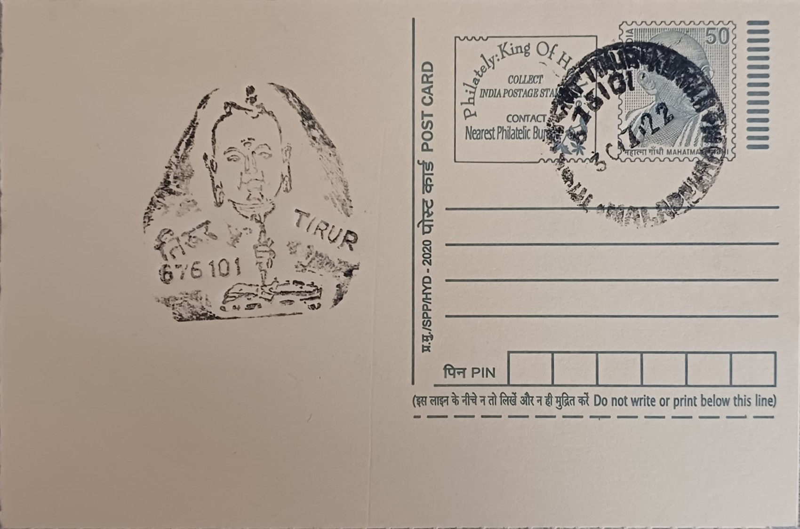

Thunchath Ramanujam Ezhuthachan
തുഞ്ചത്ത് രാമാനുജം എഴുത്തച്ഛൻ


The name Thunchaththu Ezhuthachan is drawn directly from his ancestral home, Thunchan Parambu ("Thunchan's compound"), in Trikkandiyur, a locality now part of present-day Tirur in Malappuram district. "Ezhuthachan," literally meaning "father of letters" or "teacher," was less a surname than an honorific title traditionally borne by members of a caste associated with teaching children to read and write, and it attached itself so firmly to Ramanujan that his given name is now rarely used on its own. Tradition places his birth around 1495, making him a contemporary of the broader Bhakti-era ferment reshaping devotional literature across India, though firm documentary evidence for exact dates remains elusive and most biographical details rest on oral tradition and later scholarly reconstruction rather than contemporaneous records.
Ezhuthachan occupies a singular place in Kerala's cultural history as the figure most widely credited with giving the Malayalam language its modern literary script and grammatical character, earning him the enduring epithet "Father of Modern Malayalam." Writing from outside the Brahmin fold at a time when Sanskrit and Sanskritised Manipravalam dominated serious literary and devotional composition, he chose instead to render the great epics in the spoken tongue of ordinary Keralites, a move widely read as part of the wider Bhakti movement's push to bring scripture and devotion directly to common people. His reputation rests chiefly on the Adhyathmaramayanam Kilippattu and a rendering of the Mahabharata, works still treated as foundational texts in the academic study of Malayalam language and literature.
His signature literary device, the Kilippattu or "song of the parrot," frames the narrative as being told by a divine bird addressing its mate, a structural choice that lent the sacred material an intimate, conversational register well suited to oral recitation and memorisation among a largely non-literate audience. Linguistically, he is credited with consolidating a writing system for Malayalam that absorbed elements of the Grantha and Vatteluttu scripts then in regional use, fixing orthographic conventions that later grammarians and the modern printed language would build upon. Biographical accounts, compiled mainly centuries after his death, describe a life spent partly in religious study and partly in itinerant teaching, with Tirur and the Thunchan Parambu household serving as the fixed point to which tradition consistently returns him.
A recurring theme in accounts of his life is the friction between his non-Brahmin birth and his authorship of deeply learned spiritual literature, with later hagiography recounting episodes of Brahmin scholars initially dismissing and eventually grudgingly accepting his scholarship once confronted with the depth of his Sanskrit learning and devotional insight. This tension is often cited by literary historians as the reason his vernacular retellings carried such disruptive social force: the stories of Rama and Krishna, previously filtered through Sanskrit commentary accessible mainly to a priestly elite, became available in a form ordinary agriculturists, traders and householders across Kerala could read or hear read aloud in their own homes and temples.
Thunchan Parambu itself has since been developed into a memorial and research complex, placed under a government-constituted Thunchan Memorial Management Committee formed in 1964 and subsequently supported by the Thunchan Memorial Trust, established in 2001 to broaden its cultural and literary activities. The site's standing was reinforced in 2012 when the state government inaugurated the Thunchath Ezhuthachan Malayalam University on adjoining land at Tirur, dedicating a full university to the study and promotion of the language he is held to have shaped. Railway passenger groups have in recent years also petitioned for Tirur's railway station to be renamed after him, a proposal still under official consideration that reflects how closely the town's modern identity remains tied to its most famous literary son.
| Date of Introduction | June 17, 1999 |
|---|---|
| Address | Senior Postmaster, |
| Tirur HO, | |
| Malappuram (dt.), Kerala - 676101. |